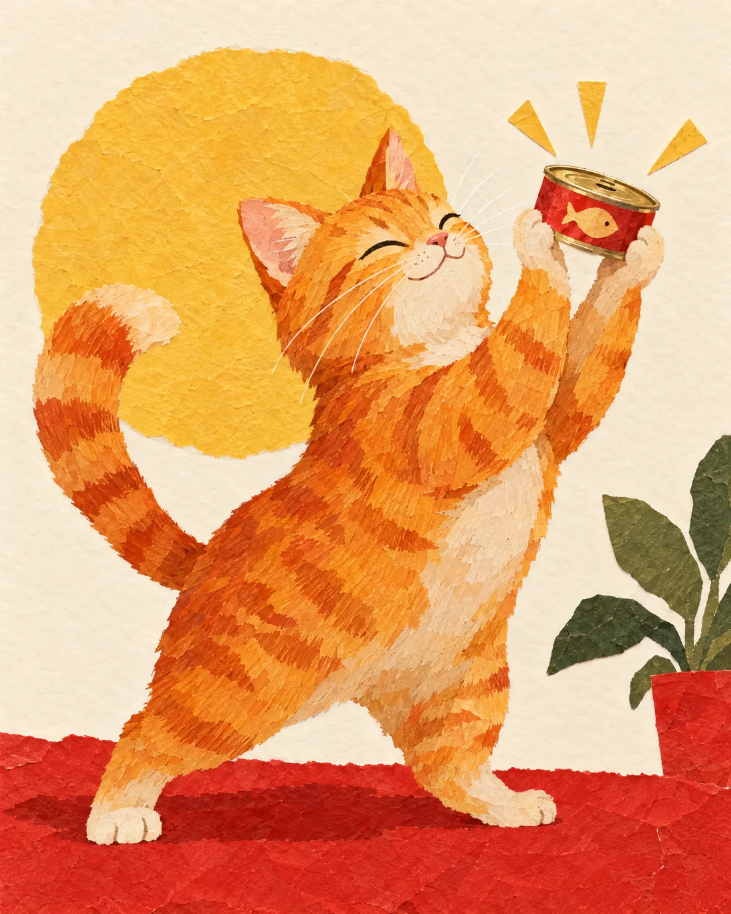
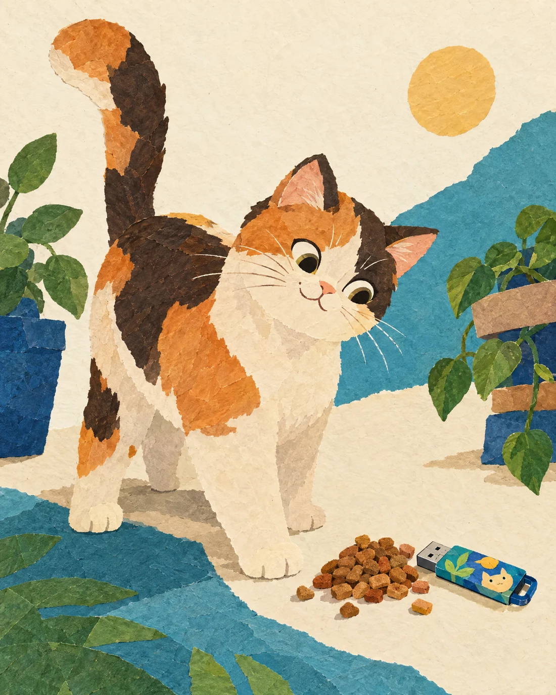
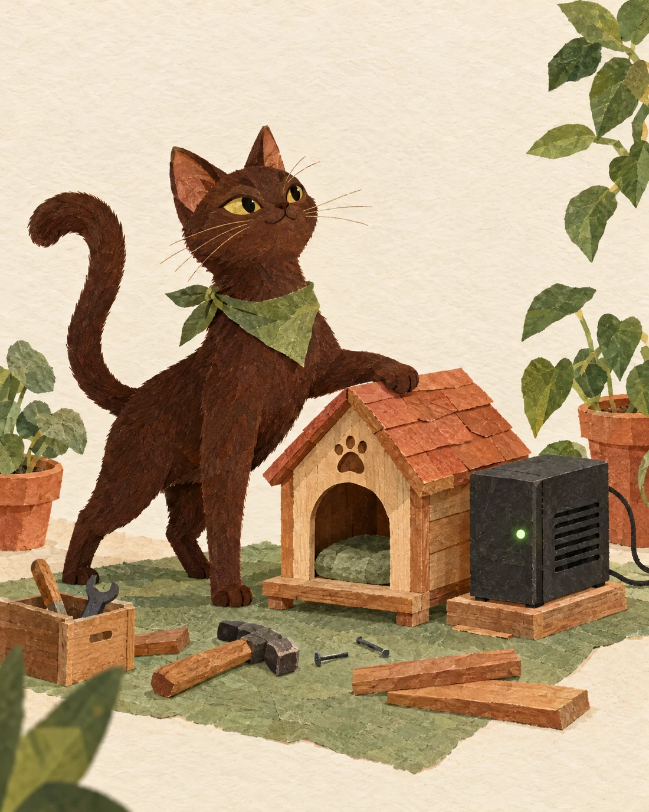
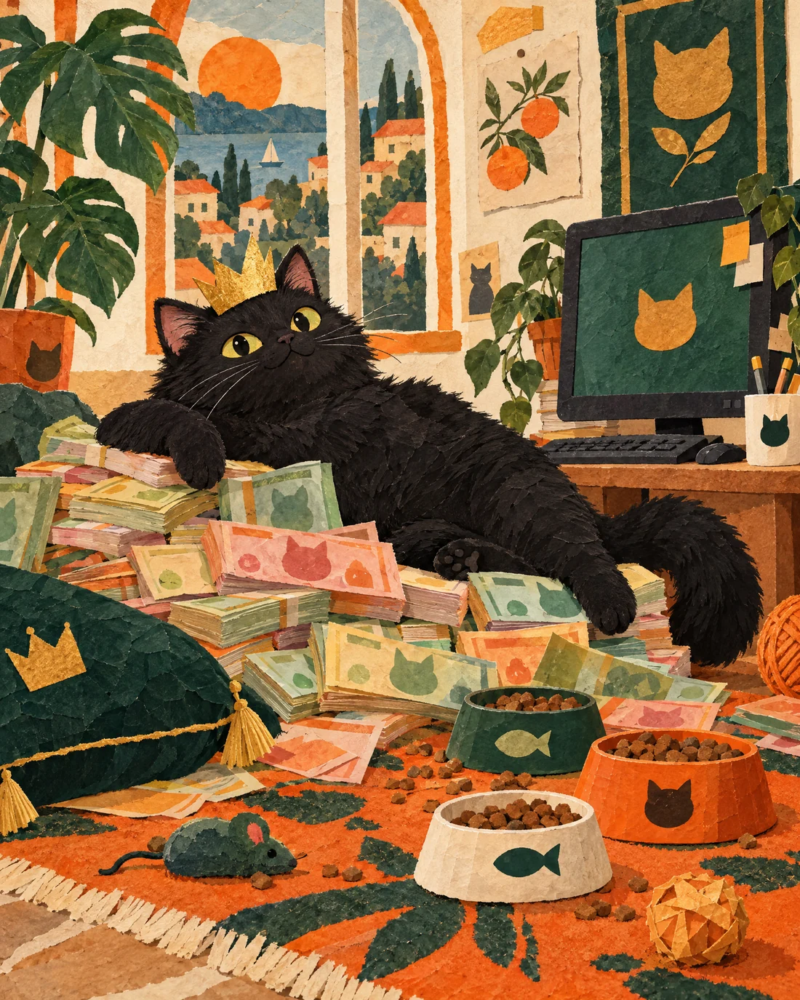

01 · küçük başlangıç
Konserve Dostu
₺50Bir fikrin ilk adımına küçük katkı.
Taslak ayrıcalık
Açık izin verilirse destekçi panosunda kısmen gizlenmiş adla teşekkür.
Açık izin verilirse destekçi panosunda kısmen gizlenmiş adla teşekkür.
Bu proje tek kişi tarafından geliştiriliyor. Katkı düzeyine göre düşünülen destekçi ayrıcalıkları burada görünür; fiyatlar ve paketler yalnızca taslak olarak gösteriliyor.

Bir fikrin ilk adımına küçük katkı.

Geliştirme yolunda daha görünür bir destek.

Prototip fikrinin ilerlemesine daha büyük katkı.

Bu tek kişilik projeye en büyük kurucu desteği.
Kurucu kasa
Bu alan gerçek destek kaydı ve izinli gösterim hazır olana kadar örnek görünüm olarak kalır.
Kasa şimdilik boş. Destekçi adı veya kişisel veri gösterilmiyor; satış ve ödeme kapalı.
Sonraki projeler
Limon’un gelişmesine katkı sağlayan destekçiler için, ileride hazırlanacak yazılım veya programlarda ilk kullanıcı adayları arasında yer alma fikri değerlendiriliyor. Her ürünün kapsamı, uygunluğu ve koşulları ayrı belirlenir.